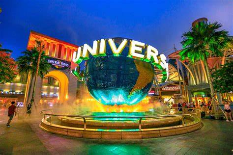
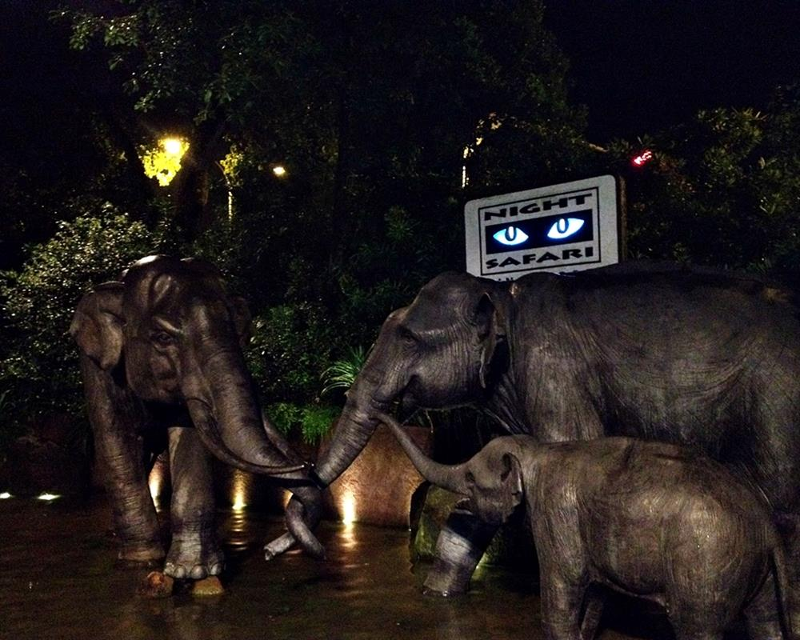
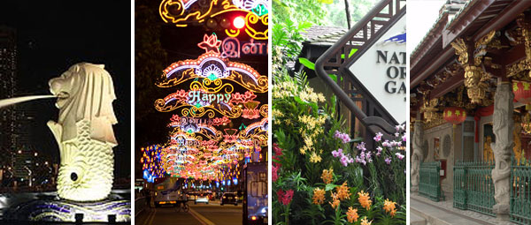

→Visiting Singapore
Studying experience in Johor Bahru will not be complete without taking the time off to visit its world-famous neighbour, the metropolitant city-island of Singapore, touted as one of the world's best city for business, leisure, and entertainment.
Universal Studios Singapore
Universal Studios Singapore is a theme park located within Resorts World Sentosa on Sentosa Island, Singapore. It was a key component of Genting's bid for the right to build Singapore's second integrated resort. On 8 December 2006, the Singapore government announced that the consortium had won the bid. Construction of the theme park and the rest of the resort started on 19 April 2007. It is the second Universal Studios theme park to open in Asia (Japan being the first), and the first in Southeast Asia. The official plans for the park were unveiled to the public when Universal Studios Singapore released a park map to the public on 20 October 2009. Universal Studios Singapore has since attracted more than 2 million visitors in the 9 months from its opening.
Universal Studios Singapore is 20 hectares (49 acres) in size, occupying the eastern most part of the 49-hectare (120-acre) Resorts World Sentosa. There are a total of 24 attractions, of which 18 are original or specially adapted for the park. The park consists of seven themed zones which surround a lagoon. Each zone is based on a blockbuster movie or a television show, featuring their own unique attractions, character appearances, dining and shopping areas. The park features the world's tallest pair of dueling roller coasters that are based on the popular television series, Battlestar Galactica; a castle from the world of Shrek and Monster Rock, a live musical show featuring the Universal Monsters. Universal Studios Singapore has over 30 restaurants and food carts, together with 20 unique retail stores and carts located around the park. Attractions premiering are marked "Premiere" and dining outlets that are certified Halal are marked with "Halal".
Address and Contact: 8 Sentosa Gateway, Singapore 098269, +65 6577 8888.
Singapore's Night Safari with Jungle Tram Ride
The opportunity to see a myriad of nocturnal animals in the secondary jungle full of mystery and drama will be yours. Look out for fierce predators and timid forest dwellers in their natural habitat under the subtle glow of the moon. The tram ride takes the visitors to the east and west loop passing by a large reservoir and weaving through selected habitats designed specifically to replicate the natural environment from the Himalayan Foothills to the Southeast Asian Rainforest and Indian Subcontinent.
At the end of the tram ride, there would be a walking trail where animals can be seen up close. See the place which was voted as the Singapore Tourism Board Leisure Attraction of the Year for three years.
Address and Contact: 80 Mandai Lake Road, Singapore 729826, +65 6269 3411.
Singapore City Tour

Merlion Park
Merlion Park is located at One Fullerton, Singapore near the Central Business District (CBD) area of Singapore. This park is a popular tourist attraction. There are two structures of the Merlion located at the park with one standing at 8.6 metres which is the original Merlion statue and a 2-metre tall Merlion cub located just behind the original statue. The park is also a major tourist attraction and a landmark of Singapore. The park was first designed as an emblem for the Singapore Tourism Board (STB) in 1964 and on 15 September 1972, the park was officially opened at an installation ceremony of the statue, officiated by then Prime Minister of Singapore, Mr Lee Kuan Yew. The original statue of the Merlion used to stand at the mouth of the Singapore River. The statue was made from November 1971 to August 1972 by the late Singapore sculptor, Mr Lim Nang Seng, it measures 8.6 metres high and weighs 70 tons. Upon the completion of Esplanade Bridge, the view of the statue was blocked from the Marina Bay Waterfront. The statue was moved to its current location on 23 April 2002 and was finished on 25 April where it is now located adjacent to the famous hotel One Fullerton.
Address and Contact: 1 Fullerton Rd, Singapore 049213.
Thian Hock Temple
Thian Hock Keng Temple is the oldest and most important Fukien, or Hoklo (Hokkien) temple in Singapore. The main temple is dedicated to Mazu, the Taoistgoddess of the sea and protector of all seamen, while a second temple at the back is a Buddhist one dedicated to Kuan Yin, the bodhisattva of mercy. Thian Hock Keng Temple was gazetted as a national monument on 6 July 1973.
Constructed in the temple architectural style of southern China, Thian Hock Keng has a grand entrance with a high step in front. The side entrance gates feature brightly coloured tiles portraying peacocks, roses and the universal Buddhist swastika in green and brown. This symbol representsgood luck, eternity and immortality.
Guarding the doors are tigers, lions and Door Gods, traditional sentinels of any Taoist temple. Beyond this elaborate entrance are two courtyards. Straddling the courtyards is the temple proper, comprising the shrine of Ma Cho Po. On either side of the temple are pagodas -- the one on the left is a shrine of Confucius while the one on the right houses ancestral tablets of immigrants who founded the temple.
Address and Contact: 158 Telok Ayer St, Singapore 068613, +65 6423 4616.
National Orchid Garden
Since 1859, orchids have been closely associated with the Singapore Botanic Gardens. The products of the Gardens' orchid breeding programme, which began in 1928, deserve a place where they can be displayed in their full splendour. The very design of these orchids is, one could say, 'hand-crafted' by the Gardens' horticultural staff, dedicated to bringing out the finest in any hybrid cross.
Over 1000 species and 2,000 hybrids are now found in the Gardens' collection, with about 600 species and hybrids on display. Every year, more vibrant and enduring hybrids are added on. So that all may admire and enjoy their diversity, richness and beauty, the National Orchid Garden now offers a permanent showcase, the largest display of tropical orchids in the world. Their opening hours are daily from 8.30am to 7pm. Admission fee is between $1 for children above 12 and $5 for adults. Children below the age of 12 is free.
Address and Contact: Singapore Botanic Gardens, 1 Cluny Road, Singapore 259569, +6471 7138/6471 7361.
→How to Contact Us
Mailing Address:
Lebuh Cemerlang,
Desa Cemerlang,
81800 Ulu Tiram,
Johor, Malaysia.
Opening Hours:
Mon - Fri 9.00am – 5.00pm
Sat & Sun 9.30am – 3.30pm
Tel: +607-8636 888 or WhatsApp 011-13052008
For course enquiries, WhatsApp
011-13052008 (English)
011-13052015 (Mandarin)
011-35433040 (Diploma in Airline Services)
For Accounts-related matter, WhatsApp 011-13052006 (Finance)
For course information, please email: marketing@crescendo.edu.my
For International Students enquiry, please email: international@crescendo.edu.my
For Suggestions/Complaints/Grievances, please email:
feedback@crescendo.edu.my
For Scholarship/Bursary, please email:
studentsupport@crescendo.edu.my
[Note: For students coming from household income of less than RM4,000 per month.]
| |